O meio-plano da F4 no tamanho nativo · item 7
17/10/2026 · Polimento, bloco C. Feito com você fora; nada instalado. O órgão e o maquinário aparecem a 1,45–1,6× e a ponte a 1,41–1,55× (pixel gordo, contra a lei: reduzir pode, aumentar nunca). A escala não é gosto: é um piso calculado. Abaixo dele, as pontas dos cabos voltam a ficar no ar e a mesa tapa o convés da ponte (as contas estão no Parallax). Então a saída é a mesma peça desenhada no tamanho em que aparece, partindo da arte aprovada, sem desenho novo.
Decidido (17/10, à noite) · a ponte nativa está no jogo
- instaladoA ponte: você escolheu a do
image-to-pixelart(a dos detalhes e da lâmpada) e pediu maior, para sair de baixo do piso. Ela foi redesenhada a 1,55×, o topo da faixa de escala dela, em duas metades, porque o gerador não passa de 320px e ela precisa de 384. As metades se sobrepõem e são costuradas por um corte torto, que passa onde as duas versões mais concordam (a linha vermelha abaixo). Não há corte reto. No jogo ela entra com escala 0,91–1, só reduzindo, e isso dá os mesmos 1,41–1,55× de antes em tela: o convés fica na mesma altura de antes, acima da mesa. As três pontes foram trocadas, com 6 gerações. As originais estão emassets/raw/f4-ponte*-original.png. - mantidoÓrgão e maquinário: ficam os de hoje, por escolha sua ("a animação deles fica mais real, as novas ficaram muito expandidas e grosseiras"). Você leu a folha certo: o da esquerda (atual) é o ampliado de hoje. Nada mudou neles.
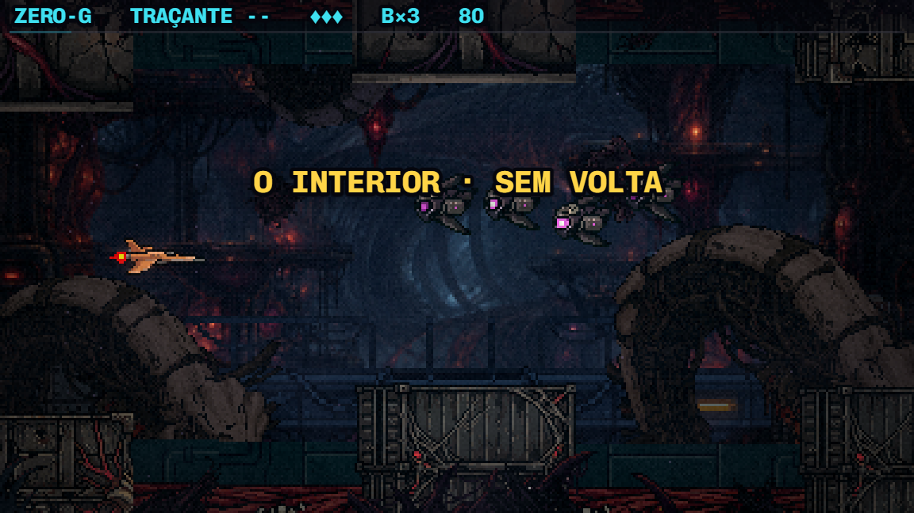
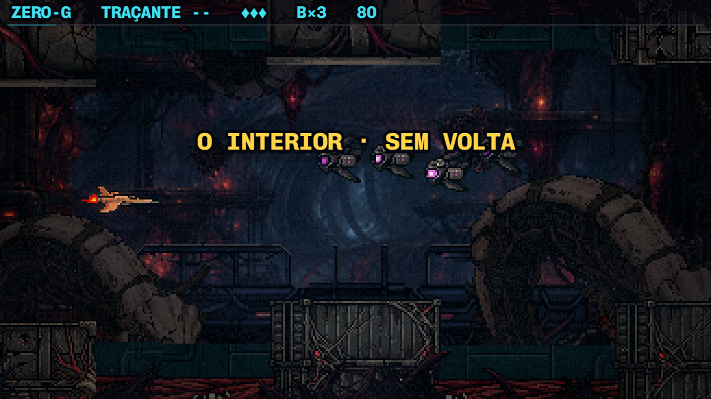
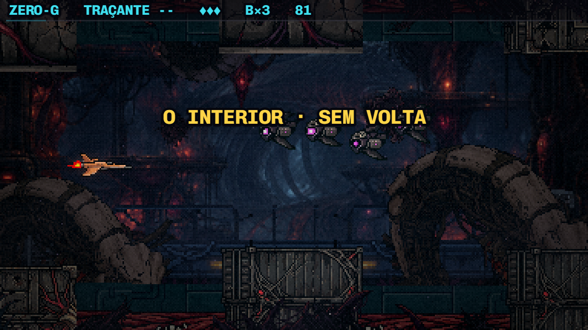
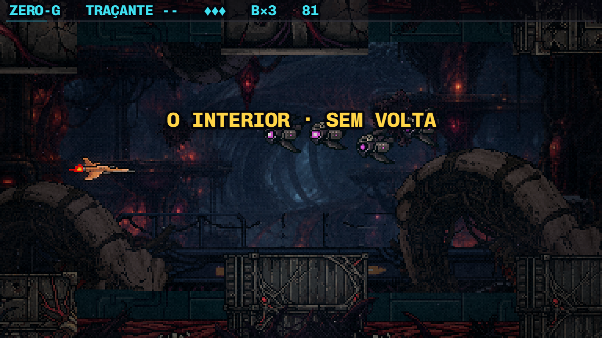
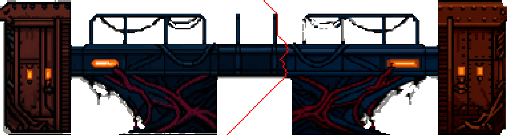
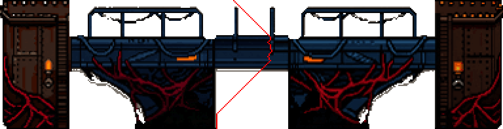
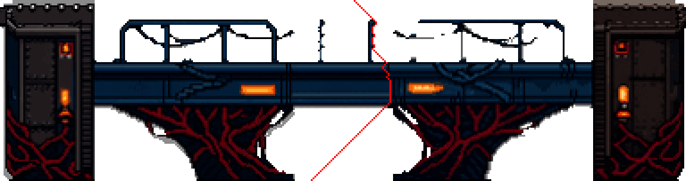
Ferramentas: _ponte-em-metades.mjs (o redesenho em metades) e _lado-a-lado-ponte.mjs (as fotos). O texto abaixo é a folha de antes da sua decisão.
Como foi feito
- A arte aprovada é ampliada suave (para o gerador receber formas, não pixels gordos) até 1,55× e redesenhada pelo PixelLab (
scripts/_polimento/_gerar-nativo.mjs). No fim, cada pixel volta para a paleta exata da arte aprovada: muda a resolução e mais nada. - Órgão e maquinário são animados (a batida tem 9 quadros e a brasa 6). Cada quadro foi redesenhado sozinho com a mesma semente, e a folha foi remontada. O GIF mostra se isso segura ou tremula.
- Na ponte o
image-to-pixelartnão serve, porque não passa de 320px e ela precisa de ~365. Usei oedit-image, e comparei com oimage-to-pixelartno limite de 320px (1,29×). - Gerações: ~25. Ferramentas novas:
_gerar-nativo.mjs,_gif-nativo-f4.mjse_lado-a-lado-nativo.mjs.
Órgão e maquinário: a animação (hoje ampliado · redesenhado nativo)


No jogo, lado a lado (a mesma câmara, o mesmo tint, a mesma névoa)
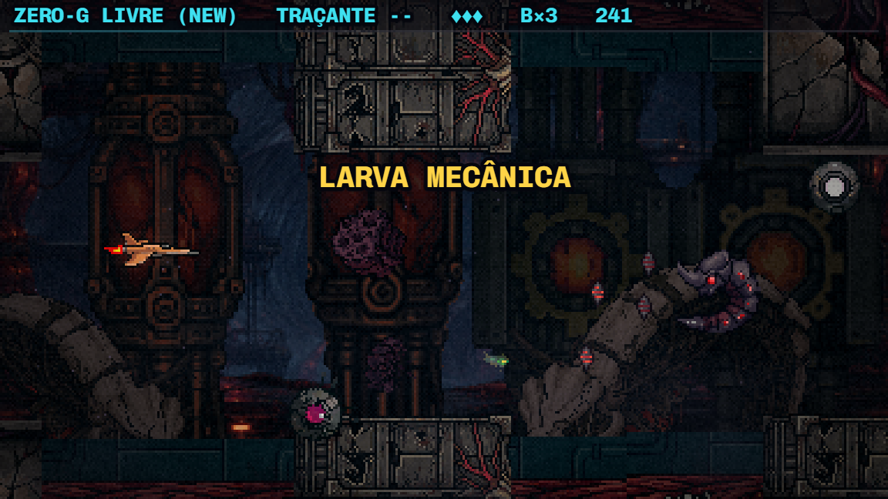
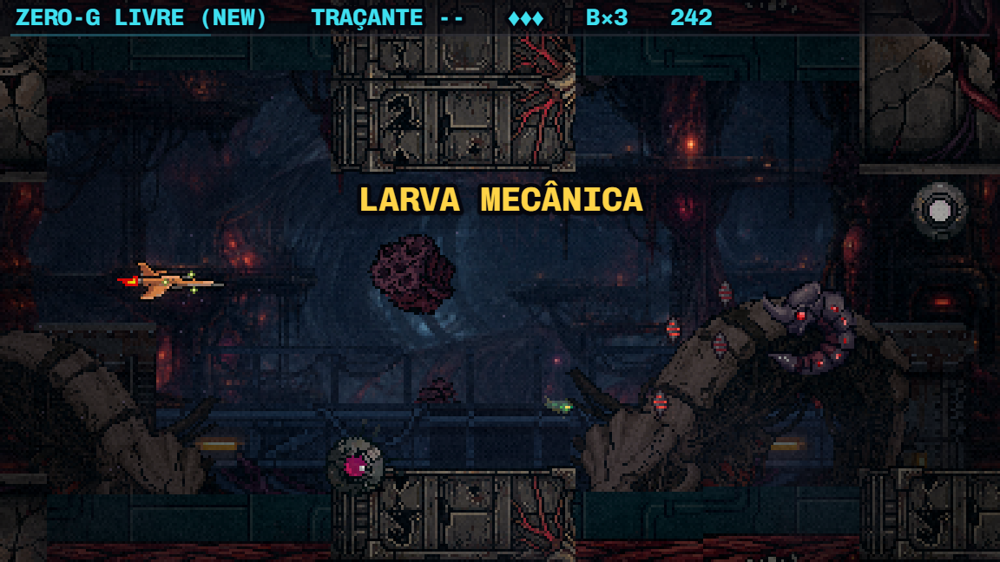
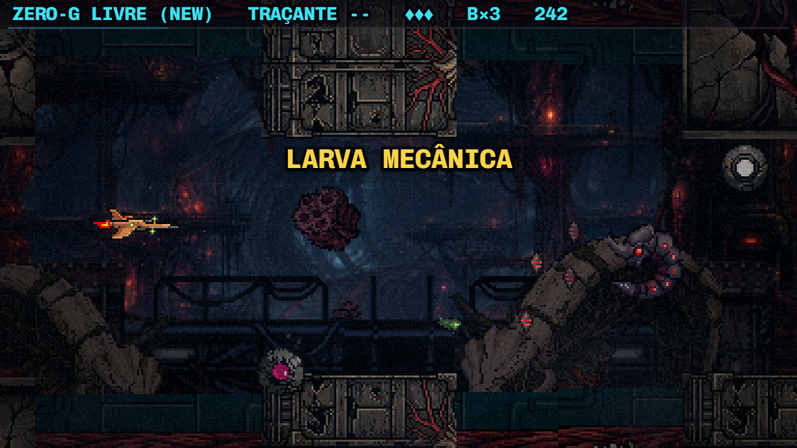
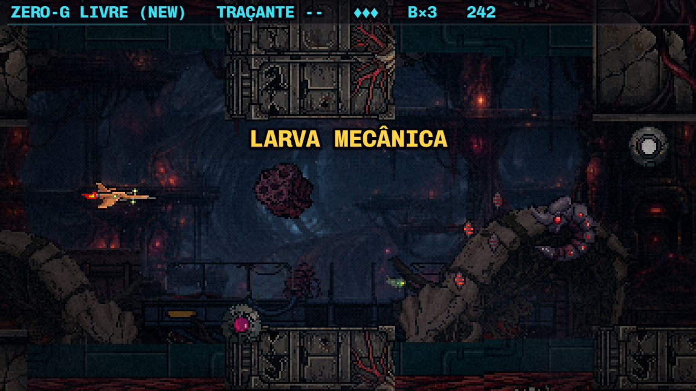
Em movimento (cadência real, peças sorteadas)


O meio-plano é escuro e esparso, e passa atrás das mesas: nos GIFs a diferença quase não aparece. A foto lado a lado, acima, é a comparação justa.
A decisão (sua)
- minha apostaÓrgão e maquinário nativos, se a fervura da batida não incomodar. Se incomodar, o caminho é redesenhar só o quadro parado e animar de novo no PixelLab, a partir dele (a regra de animar a peça inteira).
- a ponteNenhuma das duas está pronta. A do edit perdeu a lâmpada; a do image-to-pixelart está abaixo do piso. Caminho provável: redesenhar a ponte em duas metades no image-to-pixelart, com a emenda escondida num pilar (sem corte reto na vista), ou repor a lâmpada à mão sobre a do edit. Fica para depois da sua escolha.
Como entra no código: as folhas novas substituem orgao-anim.png e maquinario-anim.png (quadro de 149×198 na BootScene), e a escala das duas camadas no Parallax vira [0,94, 1]: redução, que é permitida, e equivale aos 1,45–1,55× de hoje, então a variação de tamanho entre as peças continua. Os originais vão para assets/raw/*-original.png.